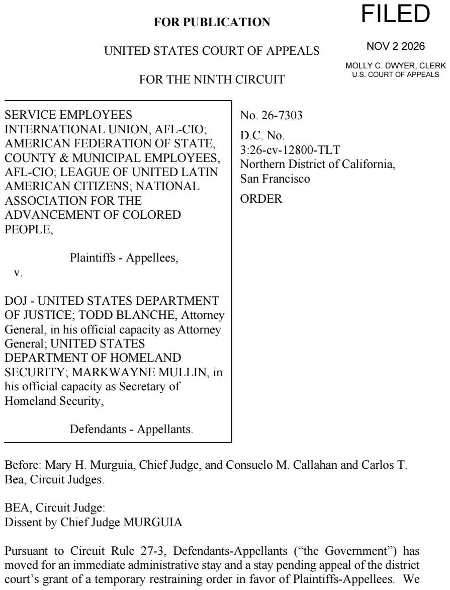
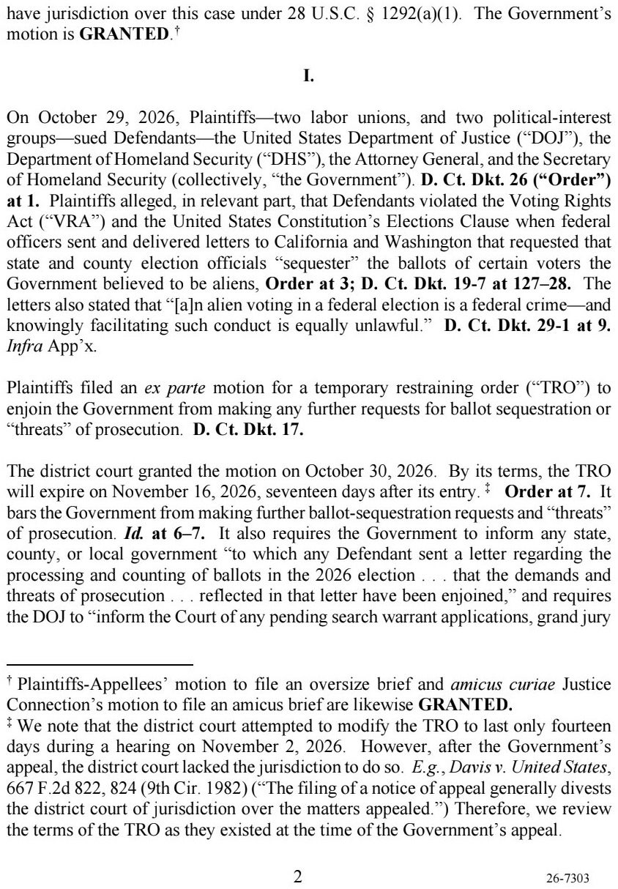
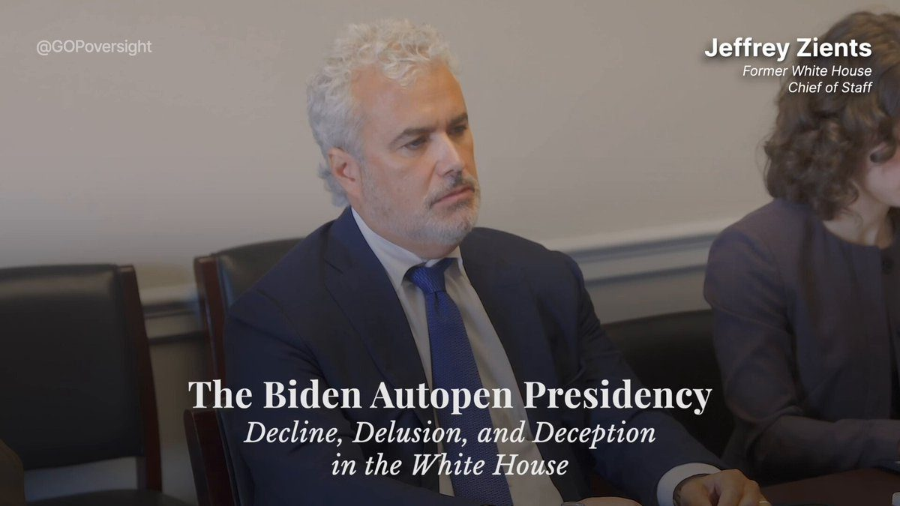
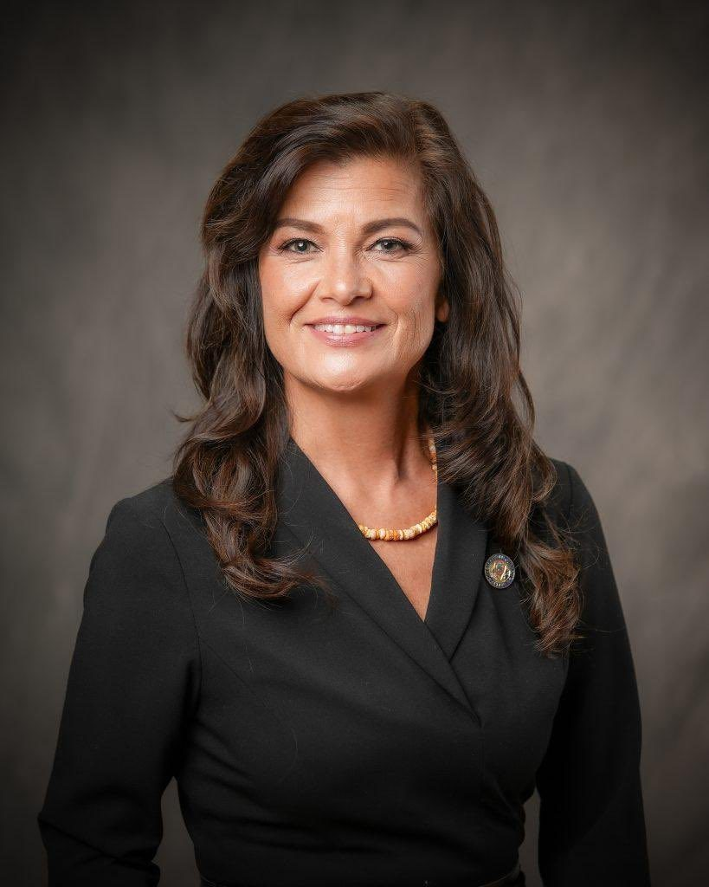
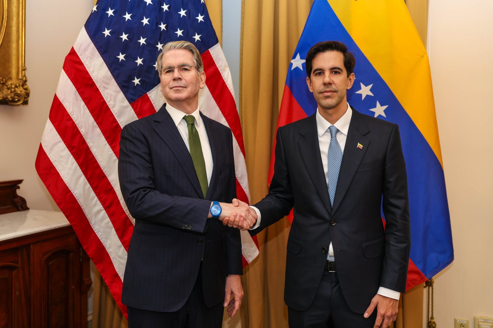
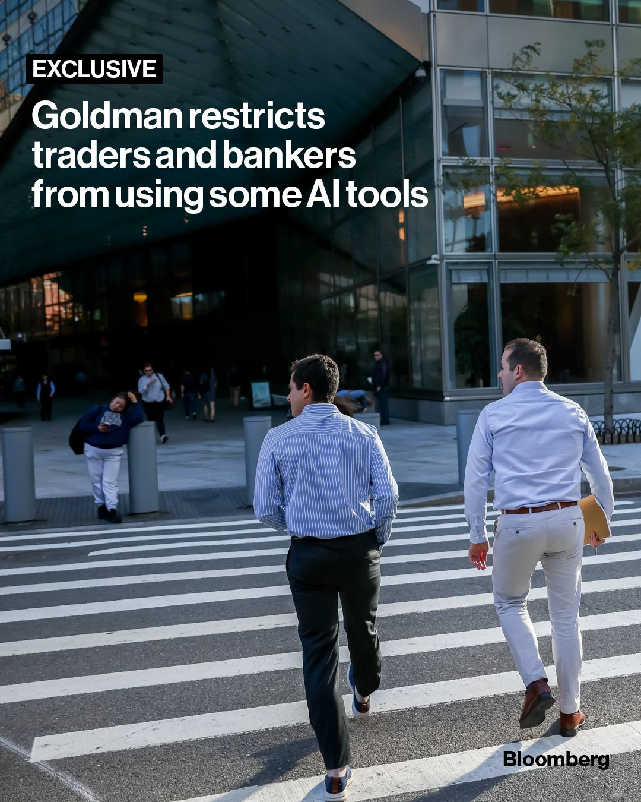
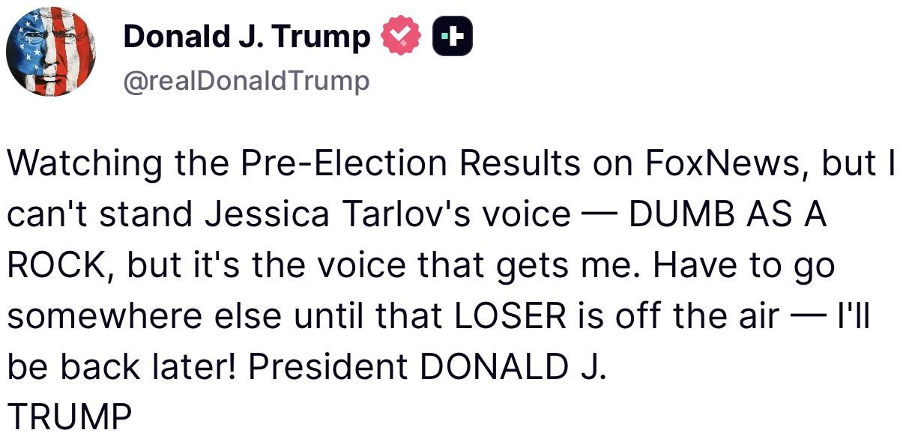

BREAKING: In a 2-1 vote, the Ninth Circuit lifted restrictions on the Trump administration's efforts to have states set aside ballots from suspected noncitizens, allowing it to resume such requests, warn election officials of prosecution, and pursue related investigative steps.
All eyes are on tokenization.
A new @Forbes article explores the global rise of tokenized U.S. equities, highlighting the growth of Ondo Stocks.
Ondo Finance’s Ian De Bode points to high fees and limited access to U.S. stocks as key drivers of international demand:
“The wrapper model is growing and will continue to grow offshore.”
That demand is reflected in trading activity. Forbes highlights tokenized stocks as the most actively traded category of tokenized RWAs.
As tokenization gains momentum globally, Ondo continues building the infrastructure for the next generation of financial markets.
We are thrilled to announce that Morgan Stanley is among the first banks to tokenize real-world assets following the launch of the @The_DTCC Tokenization Service (DTS), converting U.S. Equity and U.S. Treasuries to tokenized form.
Launched on October 28, DTS creates tokenized representations of DTC-custodied securities to support greater liquidity, collateral mobility and capital efficiency.
GM. Vibes are horrendous after the worlds largest hack happened to Binance, WW3 fears, oil at $115, midterms and AI fundamentally breaking parts of the internet
Amplified on X feeds personalized to get you hooked. It is not over. Blockchain adoption is happening, now more than ever - some quick snippets top of mind:
@BNYglobal the worlds largest tradfi custodian now supports @XRP, @RobinhoodApp is supporting XRP & RLUSD on the XRPL
@AnthropicAI just worked with zcash devs to create ‘provable inference’ with zksnarks
@Ondo are partnering with DTCC as first tokenization partner for their fund/SERV offering
We’ve been here before & I’ve honestly never been so bullish on the future of blockchain adoption. A rising tide lifts all boats!
LATEST: The @SECGov expands its crypto asset guidance, clarifying when blockchain governance participants constitute a central party and distinguishing between a network being functional versus decentralized, key factors in determining whether a token is a commodity or security.
The move onchain is accelerating.
In this four part series, co-authored with @Animocabrands, we map out where the convergence stands and where it could go next.
Today, equity perps can begin trading for the first time on @CFTC registered exchanges.
This move reflects my commitment to ensuring that America’s markets remain the most innovative, liquid, and well-regulated in the world. Instead of being forced to turn to offshore, unregulated venues to access equity perpetual futures, Americans may now access equity perps on CFTC-regulated markets subject to robust safeguards.
I appreciate the continued partnership of @SECGov and @SECPaulSAtkins as we work to further harmonize our agencies' regulatory initiatives.
Even though once-niche crypto platform Hyperliquid isn’t officially accessible in the US, its rise has rattled industry titans and caught the White House’s attention
ITALIAN CITIZEN ARRESTED IN SANCTUARY NEW JERSEY FOR VOTER FRAUD
Andrea Morzetta, an Italian national, was arrested by ICE and charged with unlawful voting by an alien. Morzetta allegedly cast ballots in four federal elections.
Illegal voting is NOT a paperwork error when someone knowingly and deliberately casts a ballot they are prohibited from casting.
American citizens deserve FAIR and HONEST elections, and the Trump administration is committed to protecting their integrity.
Americans deserve to have confidence in their elections. The courts have made it clear that the preferred remedy for election law violations is criminal prosecution. Building on Operation Protect the Vote, we will continue investigating and charging those who violate election laws or assist in their violation.
Six Additional Foreign Nationals in L.A. County Who Registered to Vote and Voted in U.S. Elections Charged with Lying on Naturalization Forms
If you vote illegally, we will find you. We will track you down, arrest you, and prosecute you.
There will be no escape.
JUST IN: 🇺🇸 US Homeland Security says voting records will be collected after elections and checked for fraud.
NEW VIDEO: Watch our exclusive extended footage of Biden aides admitting how they propped him up as he declined.
Makeup, teleprompters for small fundaisers, limiting events, stage-managing appearances, reducing his workload, avoiding interviews, even seeking Hollywood's help for the State of the Union.
They controlled everything, including who could see him. This wasn't a presidency. It was a production.
His own aides didn't know who was operating the autopen. President Trump just declared all of those actions NULL and VOID.

▶ Watch on XJUST IN: Republicans have FLIPPED the Governor’s race in Guam from Democrat to Republican
🔴Vicente Ada: 51.5% 🔵Therese Terlaje: 48.1%

Today, I met with Venezuelan Foreign Minister @OliverBlanco and congratulated him on his appointment. We discussed developments in Venezuela and the Trump Administration’s three-phase approach: stabilization, recovery, and transition.
This Administration is committed to supporting Venezuela’s economic recovery, revitalizing critical sectors, boosting energy production, and reconnecting its financial sector to restore confidence, attract investment, and lay the groundwork for a more prosperous future.

Trump to remove Rwanda and South Africa from US trade deal
Goldman Sachs has irked some of its staff after it banned most of them from using advanced artificial intelligence tools designed for coding after reviewing productivity and risk concerns. Read more here: https://www.bloomberg.com/news/articles/2026-11-02/goldman-restricts-traders-and-bankers-from-using-some-ai-tools?taid=25be24cf-2a50-4469-8a6f-ab298757fdaf&utm_campaign=trueanthem&utm_content=business&utm_medium=social&utm_source=twitter
📷: Michael Nagle/Bloomberg

BREAKING: Goldman Sachs banned bankers and traders from using AI tools like Claude Code

BREAKING: Israel says it was blindsided and caught off guard by Trump's announcement ending all US military aid to Israel, and denied knowing about it, per Kan News.
"We did not expect this announcement, certainly not today," a senior Israeli official said.
Israel's security establishment assesses that "Trump misspoke," as the current agreement runs to 2028.
Trump said hours earlier that he and Netanyahu had already agreed the US would stop paying $4 billion by the end of 2026.
BREAKING: President Trump says he has made a deal with Israeli Prime Minister Netanyahu for the US to discontinue payments to Israel at the end of 2026.
Trump says the US currently gives Israel $4 billion per year.
US oil prices erase gains and turn negative on the news.
"They are fine with it," Trump says.
The United States will mediate working-level negotiations between Ukraine and Russia on November 10–11 in Abu Dhabi, advancing President Trump’s mission to end the war. Discussions will focus on post-war security arrangements, de-escalation, humanitarian efforts, and next steps toward peace.
Additionally, American negotiators will meet this week in Brussels with representatives from France, Germany, the United Kingdom, the EU, and NATO to discuss security guarantees for Ukraine, Europe’s post-war security architecture, and economic opportunities to support Ukraine’s reconstruction.
We look forward to building on the progress made in Kyiv, Oslo, and St. Petersburg toward a comprehensive, durable peace agreement that delivers lasting security for generations to come.
97% of US homeowners with a mortgage now have a rate below today’s market rate, per the Economist.
In 2022, it was just 54%.
That’s why the housing market is frozen: almost no one wants to sell and give up a cheap mortgage for one above 7%.
BREAKING: The S&P 500 is within about 3% of its record high, yet 60% of its stocks are in a bear market, says Goldman Sachs
A handful of giant stocks are holding the index up while most of the market has fallen 20% or more from its highs.
Americans are falling behind on their bills at levels not seen since the Great Recession.
Nearly 20% of consumers were late on payments, a level last surpassed in 2009, per Bloomberg.
42.5% of recent college graduates are underemployed, per New York Fed.
A majority of the Supreme Court signaled on Tuesday it would allow Catholic preschools receiving taxpayer money to deny enrollment to children of same-sex couples, potentially delivering another significant win for religious rights in schools.
Trump Administration Delivers $838 Billion in Trade and Investment Through Department of Commerce’s Global Markets Unit